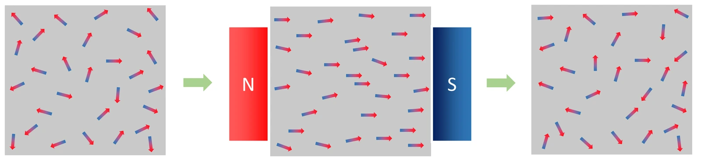

고2 물리학 · Ⅱ 전기와 자기 · 웹툰 10화 「자석에 붙지 않는 금속」
실험에서 여러 시료(철·니켈·알루미늄·텅스텐·구리·물·비스무트 등)를 강한 자석 위 저울에 놓고 거리를 바꿔 가며 저울 눈금 변화를 쟀습니다. 철·니켈은 강하게 끌리고 알루미늄은 아주 약하게 끌렸으며 구리·물·비스무트는 약하게 밀렸고, 가까울수록 힘이 급격히 커졌습니다. 자성체의 세 종류를 정리합니다.
실험 데이터 되짚기
N52 자석(지름 4 cm·두께 2 cm, B_r = 1.44 T), 시료 1 cm³, 자석 축 위의 자기장 식과 상온 감수율로 계산한 값입니다.
| 시료 | 종류 | 감수율 χ | 0.2 cm 거리에서 저울 변화 | 방향 |
|---|---|---|---|---|
| 철 · 니켈 | 강자성 | ≫ 1 (포화) | 수 N (수백 g) | 강하게 끌림 |
| 알루미늄 | 상자성 | +2.2 × 10⁻⁵ | 약 −10 mg | 약하게 끌림 |
| 텅스텐 | 상자성 | +7 × 10⁻⁵ | 약 −30 mg | 약하게 끌림 |
| 구리 | 반자성 | −1 × 10⁻⁵ | 약 +4 mg | 약하게 밀림 |
| 물 | 반자성 | −0.9 × 10⁻⁵ | 약 +4 mg | 약하게 밀림 |
| 비스무트 | 반자성 | −1.66 × 10⁻⁴ | 약 +70 mg | 밀림 (가장 큼) |
저울 변화가 0보다 위(무거워짐)는 밀린 것, 아래는 끌린 것입니다. 자석에 가까울수록 힘은 급격히 커집니다(B·dB/dz에 비례). 철·니켈은 포화 자기화되어 χ로 계산할 수 없을 만큼 큰 힘을 받습니다.
자기장 속에 놓인 물질은 내부 전자의 궤도·스핀 운동 때문에 자기화됩니다. 그 정도를 나타내는 자기 감수율 χ의 부호와 크기로 세 종류로 나눕니다. 강자성체(철·니켈·코발트, χ ≫ 1): 원자 자석이 자발적으로 정렬한 구역(자기 구역)이 있어 자석에 강하게 끌리고 자석을 떼도 자성이 남습니다. 상자성체(알루미늄·텅스텐, χ ~ 10⁻⁵): 짝 없는 전자가 자기장 방향으로 조금 정렬해 약하게 끌립니다. 반자성체(구리·물·비스무트, χ ~ −10⁻⁵): 전자 궤도가 자기장을 상쇄하는 방향으로 반응해 약하게 밀립니다. 모든 물질이 반자성을 갖지만 상자성·강자성이 있으면 그것에 가려집니다. 웹툰 10화의 분리수거: 철 캔은 붙고 알루미늄 캔은 그대로 — 알루미늄은 붙긴 붙는데 너무 약해 못 느낍니다.
교재 그림
상자성체와 반자성체 — 자석 앞에서만 잠깐

위: 상자성체(알루미늄 등)는 자기장(N → S) 방향으로 정렬해 약하게 끌립니다. 아래: 반자성체(구리·물 등)는 자기장과 반대 방향으로 자기화되어 약하게 밀립니다. 둘 다 자석을 치우면 자성이 사라집니다. 아래에서 강자성체와 함께 움직여 비교해 보세요.
움직여 보기
자석을 가져오면 물질 속 '작은 자석'들은?
자석(N극이 위)을 가까이 가져온 뒤 치워 보세요. 철은 자기 구역(점선 칸)이 통째로 돌아 정렬하고, 자석을 치워도 정렬이 남습니다(자석이 됨). 알루미늄은 원자 자석이 조금만 기울었다가 치우면 제멋대로로 돌아가고, 구리는 자기장과 반대 방향의 약한 자기화가 생깁니다. 상자성·반자성의 기울기와 화살표 길이는 눈에 보이게 크게 과장했습니다(실제는 10만 분의 1 수준).
비균일 자기장 속 작은 시료가 받는 힘 F = (χV ÷ μ₀) × B × dB/dz — 감수율·부피·자기장의 기울기에 비례합니다. N52 자석 축 위 자기장은 표면에서 약 0.5 T, 1 cm 떨어지면 급감 → 거리가 가까울수록 힘이 훨씬 큽니다. 알루미늄 1 cm³(χ = 2.2 × 10⁻⁵)이 끌리는 힘은 0.2 cm 거리에서 약 0.1 mN → 저울 눈금 10 mg 남짓 감소. 비스무트(χ = −1.66 × 10⁻⁴)는 더 큰 힘으로 밀려 눈금 증가. 반자성은 아주 약하지만 자기장이 엄청나게 강하면 물체를 띄울 수도 있습니다 — 몸의 대부분이 물인 개구리를 띄운 실험(2000년 이그노벨상, 가임은 뒤에 그래핀으로 노벨상).
움직여 보기
자석 위 저울 — 시료를 내려 보며 눈금 읽기
시료가 자석에 끌리면 자석도 위로 당겨져 저울이 가벼워지고(−), 밀리면 자석이 아래로 눌려 무거워집니다(+). 거리를 줄이면 힘이 급격히 커지는 것도 확인하세요. 0.2 cm 값은 실험 표와 같고, 거리에 따른 모양은 자석 축 위 자기장 식(F ∝ B·dB/dz)으로 그렸습니다. 철은 수백 g이라 이 눈금에 담기지 않습니다.
힘을 자석 중심축 위의 자기장 식과 균일한 감수율로 계산했습니다(시료를 점으로 근사). 실제 시료는 크기가 있어 자기장이 위치마다 다르고, 시료 모양에 따른 반자기장, 불순물(철 미량)이 결과를 크게 바꿉니다. 감수율은 상온 값이며 상자성 χ는 온도에 반비례(퀴리 법칙)하고 강자성체는 퀴리 온도(철 770 ℃) 이상에서 상자성으로 바뀝니다. 하드 디스크는 강자성 물질의 자화 방향으로 0과 1을 기록하고, 냉장고 자석·스피커·전동기의 영구 자석은 강자성체, MRI는 몸속 물(반자성)과 산소를 잃은 혈액(상자성)의 미세한 차이도 이용하며, 자기 부상 열차는 자석의 힘으로 떠서 달립니다.
χ > 0 끌림(상자성), χ < 0 밀림(반자성), χ ≫ 1 강자성 · μ₀ = 4π × 10⁻⁷ · 퀴리 온도(철 770 ℃)
“10라운드! 철 클립, 알루미늄 호일, 10원 동전, 물방울 중 네오디뮴 자석에 확실히 붙는 건? 난 철 클립 하나.” “금속은 다 붙지 않나? 클립, 호일, 동전!” … “알루미늄은 붙긴 붙는데 너무 약해서 못 느끼는 거구나.”
웹툰 10화 · 클립만 딱 달라붙는다 — 제로 5 : 5 뭉치
“물질을 이루는 원자는 그 자체로 아주 작은 자석처럼 행동해. 강자성체는 원자 자석이 같은 방향으로 모인 자기 구역이 있어 강하게 자화되고, 상자성체는 아주 약하게, 반자성체는 반대 방향으로 약하게 자화되어 살짝 밀려나. 반자성은 아주 약하지만 자기장이 엄청나게 강하면 개구리도 띄울 수 있어.”
웹툰 10화 · 뭉치: “나도 띄워 줘!” 이안: “넌 철 부품이 많아서 오히려 딱 달라붙을걸.”
눈금이 늘었다 = 시료가 아래로 밀렸다 = 자석이 시료를 밀어냈다 → 반자성체(χ < 0). 30 mg 정도면 비스무트처럼 감수율이 큰 반자성체일 가능성이 큽니다.
힘은 B·dB/dz에 비례하는데 자석 축 위 자기장은 거리에 따라 급격히 줄어 1/4보다 훨씬 작게(대략 1/8~1/16) 됩니다. 그래서 상자성·반자성은 자석 표면 가까이에서만 측정됩니다.